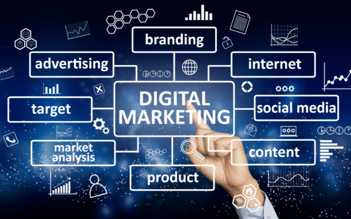

What is Digital Marketing?
Digital marketing is the act of selling products and services through channels such as social media, SEO, email, and mobile apps. Basically, digital marketing is any form of marketing that involves electronic devices. It can be done online and offline, and in fact, both kinds are important for a well-rounded digital marketing strategy.
1. Learn how digital marketing efforts drive business success in the modern world
From a general standpoint, marketing is the practice of identifying and satisfying customer needs. This is a particularly important task in the business context, as successful marketing efforts can drive inbound leads and attract a large customer case. The traditional marketing cycle involves an analysis of market orientation, product mix and business environment. Even though marketing has deep roots in business history and culture, digital marketing is a relatively new practice.
With the explosion of digital technology—including widespread and pervasive use of computers and smartphones—businesses began to experiment with new marketing tactics. Thus, digital marketing was born.
Fast forward to the present and digital marketing is as important, if not more so, than traditional marketing methods. This divide seems destined to grow wider over time, as many businesses are diverting funds from traditional to digital marketing methods. Taken as a whole, it is vital for businesses to plan and execute a viable digital marketing strategy.
2. What Are the Basics of Digital Marketing?
In a nutshell, digital marketing refers to any marketing methods conducted through electronic devices which utilize some form of a computer. This includes online marketing efforts conducted on the internet. In the process of conducting digital marketing, a business might leverage websites, search engines, blogs, social media, video, email and similar channels to reach customers.
Unlike traditional marketing—which is static and often referred to as “one-way” communication—digital marketing is an ever-changing, dynamic process. Stated otherwise, customers cannot interact with business through a billboard or print ad, whereas digital marketing provides an avenue for two-way communication between a business and its actual or prospective customers.
These days, screen time is at an all-time high for many people. Digital marketing takes advantage of this reality, promoting business products and services across the internet. In this way, businesses ensure that their marketing efforts are more likely to reach customers, by targeting them where they spend most of their time.
From startups to enterprise businesses, a multifaceted digital marketing approach can lead to significant commercial benefits. Successful digital marketing strategy generally involves a combination of various methods, including online advertising, search engine optimization and marketing, social media marketing and management and content creation, among others.
3.What Are the Basics of Digital Marketing?

Digital marketing is a broad term that encompasses many different channels for promoting business interests to prospective customers. Depending on the business needs and goals, there are countless ways to conduct digital marketing. It is not a cookie-cutter exercise.
That being said, there are several common methods for conducting digital marketing, including:
- Search Engine Optimization (SEO) — SEO is the practice of improving ranking within major search engines to increase online traffic.
- Search Engine Marketing (SEM) — SEM leverages paid online advertising to increase website visibility within search engines. SEM is often used in conjunction with SEO.
- Pay-Per-Click (PPC) — PPC is an online method for advertising where a business only pays for its ads when a person clicks on them.
- Social Media Marketing (SMM) — SMM is the practice of using social media channels to promote business products or services. The use of social media influencers, often referred to as influencer marketing, is prevalent in SMM.
- Email Marketing — Email marketing enables businesses to send branded, promotional content directly to prospective customers via email. The use of automated newsletters is common in this context.
- Affiliate Marketing — Affiliate marketing is a performance-based exercise that enables revenue sharing and pay-per-sale (PPS) compensation within a common network.
- Content Marketing — Content marketing refers to the publishing and distribution of text, video or audio materials to customers online. Blogs, videos and podcasts are common ways for businesses to engage in content marketing.
- Native Advertising — Native advertising involves blending marketing materials into a medium, making the underlying message and marketing purposes equally important. Sponsored content, in which one business posts its own content on a different website, is a common method of native advertising.
As the list above indicates, there are numerous ways to execute a digital marketing strategy. For most businesses, successful inbound marketing involves the use and application of multiple digital marketing methods.
4. What Benefits Can I Achieve Through Digital Marketing?
Overall, businesses of every shape and size can achieve powerful benefits through effective use of digital marketing methods. Furthermore, the cost of digital marketing can be tailored to each specific business, stripping many barriers to entry of traditional methods. With so many benefits available for just about any budget, it makes sense why so many businesses are succeeding with digital marketing efforts.
More specifically, digital marketing can help businesses achieve any or all of the following benefits:
- Global Reach — Unlike traditional methods, digital marketing is not necessarily bound to a specific geographic area. The internet is available to customers across the globe. This allows businesses to market and sell to customers who live in a different state or country, removing many traditional barriers to entry.
- Low Cost of Entry — To achieve the global reach of digital marketing through traditional channels, there would be a serious price tag attached. On the other hand, certain aspects of digital marketing can be achieved with a small investment of time and resources. For example, even small or startup businesses can create a website, manage social media and publish blogs without breaking the bank.
- Measurable ROI — In order to maximize profits, businesses must carefully evaluate return on investment (ROI). With traditional marketing, ROI can be difficult, sometimes impossible, to measure. On the other hand, digital marketing provides real-time visibility into the effectiveness of each campaign, enabling business leaders to make well-informed decisions to drive revenue and increase profit.
- Improved Targeting — Digital marketing allows businesses to target very specific demographics of potential customers. By engaging customers in a particular geography, industry or social channel, businesses have a much better chance of reaching their target demographic.
- Dynamic Adaptability — Digital marketing strategies are extremely malleable and flexible, enabling businesses to adjust course when needed. Unlike long-term, traditional marketing campaigns, businesses can adjust their digital efforts on the fly, enabling quick pivots when necessary to realize commercial opportunity.
- Immediate Connection — Before making a purchase, modern customers generally conduct online research and evaluate reviews. The first step in this process typically starts with a search engine. In this way, businesses with developed SEO, SEM and PPC strategies can connect immediately with customers.
- Relationship Building — The rise of social media has turned it into a dominant communications platform for many customer demographics. Furthermore, customers increasingly want to interact with businesses on their terms and on their preferred platform. As a result, businesses that engage in effective SMM practices can build longtime and loyal relationships with current and prospective customers.
5. How Do I Create and Implement a Digital Marketing Strategy?
The process for creating and implementing a digital marketing strategy involves many steps and required considerations. In this context, it is critical to devote time and resources to planning and creation. Information, analytics and research collected while planning and creating can have a tremendous impact during implementation.
It is true that every business has unique needs and goals. Correspondingly, the creation and implementation of a digital marketing strategy will change from business to business. But in common practice, many businesses employ a similar process for creating and implementing a digital marketing strategy, as outlined below.